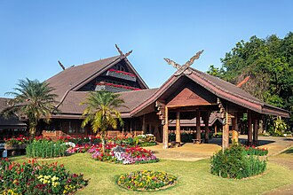

ธรรมชาติและภูเขา
สัมผัสความงดงามของธรรมชาติ ภูเขา น้ำตก และทะเลหมอกภาคเหนือ

ดอยอินทนนท์
จ.เชียงใหม่
ยอดเขาสูงสุดของประเทศไทย สูง 2,565 เมตร มีน้ำตกวชิรธาร น้ำตกแม่กลาง และพระมหาธาตุนภเมทนีดล-นภพลภูมิสิริ
ธรรมชาติ เชียงใหม่
ดอยตุง
จ.เชียงราย
พระตำหนักดอยตุงและสวนแม่ฟ้าหลวง ชมดอกไม้เมืองหนาวหลากสีสัน ท่ามกลางอากาศเย็นสบายตลอดปี
ธรรมชาติ เชียงรายภูชี้ฟ้า
จ.เชียงราย
จุดชมทะเลหมอกและพระอาทิตย์ขึ้นที่สวยงามที่สุดแห่งหนึ่ง ยอดเขาแหลมชี้ขึ้นฟ้าเป็นเอกลักษณ์
ธรรมชาติ เชียงราย
อุทยานแห่งชาติดอยภูคา
จ.น่าน
อุทยานที่มีต้นชมพูภูคาเป็นเอกลักษณ์ ดอกไม้หายากที่พบเฉพาะที่นี่ พร้อมทะเลหมอกยามเช้า
ธรรมชาติ น่าน
กว๊านพะเยา
จ.พะเยา
ทะเลสาบน้ำจืดขนาดใหญ่ จุดชมพระอาทิตย์ตกสวยงาม มีวัดติโลกอารามอยู่กลางน้ำ
ธรรมชาติ พะเยา
ปาย
จ.แม่ฮ่องสอน
เมืองเล็กๆ ท่ามกลางหุบเขา มีสะพานประวัติศาสตร์ปาย หมู่บ้านจีนยูนนาน และจุดชมวิวหยุนไหล
ธรรมชาติ แม่ฮ่องสอน